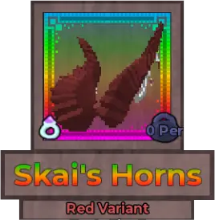
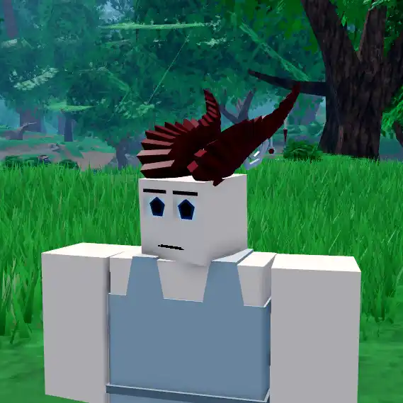
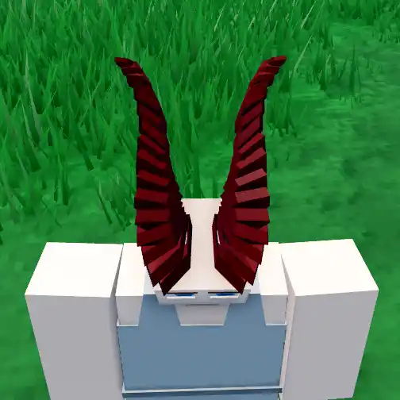
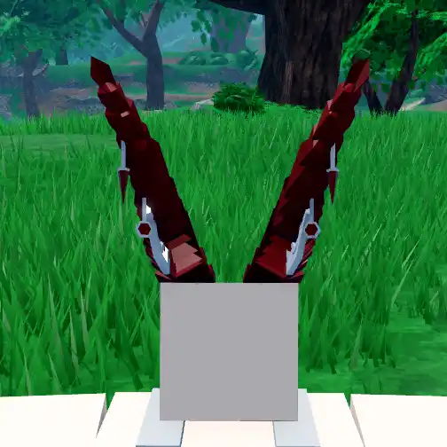
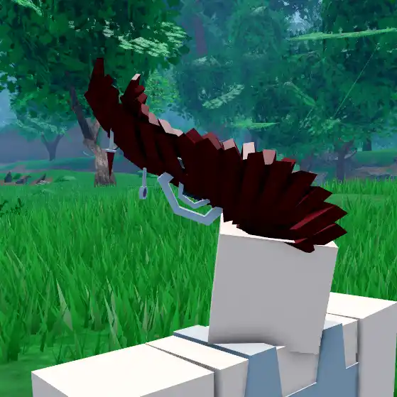
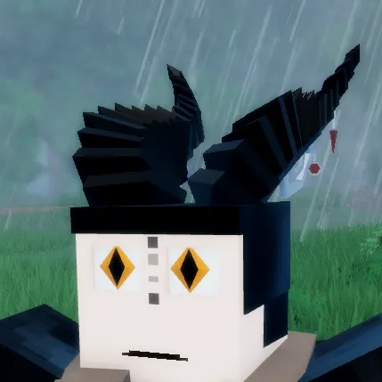

Skai's Horns

Info
Slot: Accessory
Recolorable?: Yes
Unique Colors: None
Particle Effects: None
Sound Effects: None
Owner: k_ameai / Skai
Appearance & Effects
In-game description: None
Skai's Horns are a pair of curved horns that appear on the player's head. They are curved backwards and have small trinkets hanging from the bottom. Skai's Horns can be recolored, and only the body of the horns will change colors, not the attached objects.
Inspiration
Skai's Horns were inspired by the Roblox accessory Black Dragonborn Horns. The owner, Skai, really likes dragons. The horns take loose inspiration from the horns that dragons from Baldur's Gate 3 have.

Skai's Horns viewed from the front

Viewed from the top
Image Gallery

The horns from the back

The horns from another angle

An older picture of Skai's Horns